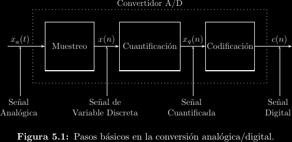
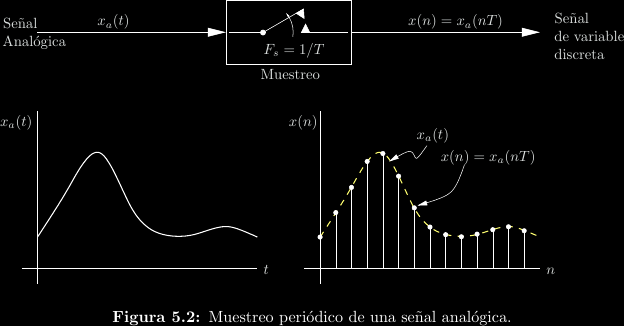
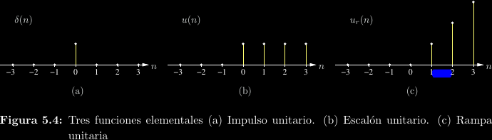
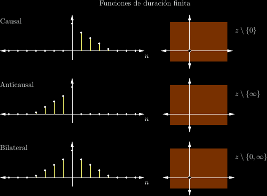
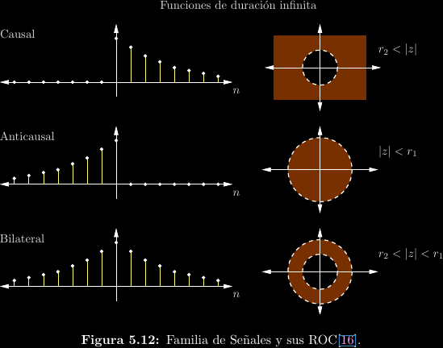
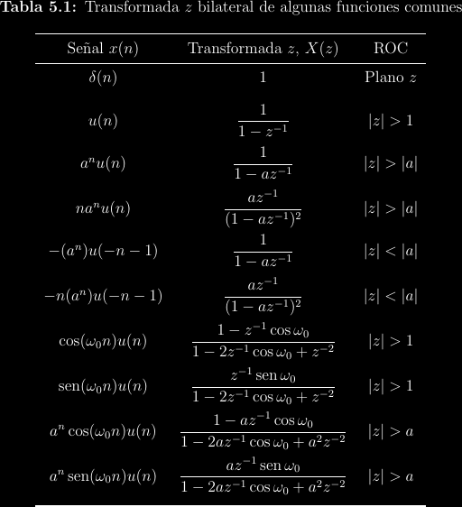
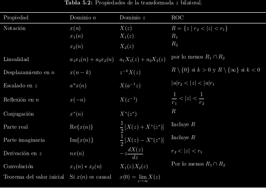

Funciones en tiempo discreto
Recordar de la introducción del curso que una señal puede ser continua o discreta, lo cual se refiere a si la señal está definida para precisiones arbitrariamente bajas de la variable independiente o si solo existe para algunos valores particulares de la variable independiente, típicamente incrementos enteros.
Los caso más evidente de señales discretas aparecen en sistemas digitales, en los cuales los valores de la señal son discretos y finitos. Las señales continuas, por otro lado, suelen estar asociadas a sistemas analógicos. Los sistemas físicos son primordialmente analógicos, por lo cual una gran parte de la electrónica se dedica a este caso. Cuando un sistema físico ha de interactuar con un sistema digital, se vuelve necesario un ADC que convierte de señales analógicas a digitales.

Un ADC:
-
Muestrea una señal a un intervalo regular, recolectando valores continuos en tiempo discreto.
-
Cuantifica y codifica los valores continuos para obtener una señal digital. Por ejemplo, un ADC de 12 bits puede emitir un resultado de entre 0, 1, 2, ..., 4094 ó 4095 (\(2^{12} - 1\)). Existe un error asociado a este proceso: si 0 corresponde a -3.3V y 4095 corresponde a 3.3V, no es posible codificar perfectamente un cambio de 1V, ya que la división es \(\frac{6.6}{4095} \approx 0.0016\).

Las funciones en tiempo discreto que se tratan en este curso no están definidas para entradas no enteras, ni siquiera son de valor cero.
Discretización de funciones utilitarias
Antes se tenía que: \[u(t) = \int_{-\infty}^t{\delta(\tau)\mathrm{d}\tau}\] Por lo que ahora decimos: \[u(n) = \sum_{m = -\infty}^n \delta(m)\]
Así que: \[ \begin{align*} u(n) &= \begin{cases} 0; & n < 0 \\ 1; & n \ge 0 \end{cases} \\ \delta(n) &= \begin{cases} 0; & n \ne 0 \\ 1; & n = 0 \end{cases} \end{align*} \]

Muestreos
Matemáticamente, el muestreo uniforme de una función \(f(t)\) a una tasa de muestreo de \(\frac{1}{T}\) puede visualizarse como: \[\hat f(t) = \sum_{n = -\infty}^{\infty}{f(nT)\delta(t - nT)}\]
Un teorema muy importante en teoría de información es el teorema del muestre, el cual dice que la tasa de muestreo \(\frac{1}{T}\) debe ser al menos el doble que el ancho de bancha del espectro de la función para que no ocurra pérdida de información al muestrear.
Transformada \(z\)
Tómese la transformada de Laplace de una señal muestread \[ \begin{align*} \mathcal{L}\{\hat f(t)\} &= \int_{-\infty}^{\infty}{\left[\sum_{n = -\infty}^{\infty}{f(nT)\delta(t - nT)}\right]e^{-st}\mathrm{d}t} \\ &= \sum_{n = -\infty}^{\infty}{f(nT)\int_{-\infty}^{\infty}{\delta(t - nT)e^{-st}\mathrm{d}t}} \\ &= \sum_{n = -\infty}^{\infty}{f(nT)e^{-snT}} \end{align*} \]
Sean \(g(n) = f(nT)\) y \(z = e^{sT}; z \in \mathbb{C}\), por lo cual, \[ \mathcal{L}\{\hat f(t)\} = \sum_{-\infty}^{\infty}{g(n)z^{-n}} \]
A esta operación se le llama transformada \(z\) bilateral. En otras palabras, \[\mathcal{Z}\{f(nT)\} = \mathcal{L}\{\hat f(t)\}\]
Explícitamente, \[X(z) = \mathcal{Z}\{x(n)\} = \sum_{n = -\infty}^{\infty}{x(n)z^{-n}}\]
Nótese que la transformada \(z\):
-
Es una transformada discreta, no una transformada integral.
-
Es una serie de Laurent.
-
Como es una serie de potencias, converge solo dentro de una ROC.
-
Está centrada en el origen.
-
Su entrada es una función de variable entera.
-
Su salida es una función de variable compleja.
-
\(z = e^{sT}\) es un mapeo del plano \(s = \sigma + j\omega\) al plano \(z\).
 
Transformada inversa
Semejante al caso general con Laplace, la transformada \(z\) inversa es: \[x(n) = \frac{1}{2\pi j}\oint_C{X(z)z^{n - 1}\mathrm{d}z}\]
Donde \(C\) es cualquier contorno positivo dentro de la ROC que rodee al origen.
Algunas transformadas

Propiedades
